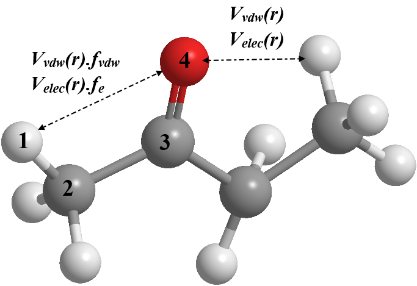

1-4 interaction scaling Factors¶
As mentioned earlier, the non-bonded interactions apply to all pairs of non-connecting atoms between molecules. For atoms within molecules, the non-bonded interactions apply to pairs of atoms that are at least three consecutive bonds apart (1-4 interactions).
However, due to the inadequacy of classical force fields, the fitted vdw interactions and coulombic interactions can be over-estimated at the 1-4 sites. To minimise these effects, the 1-4 scaling factors would be included to reduce the over exaggeration of short-range repulsive effects and give better conformational energies of molecules.
These scaling factors, called the 1-4 vdw scaling factor (\(f_{vdw}\)) and the 1-4 electrostatic scaling factor (\(f_{e}\)) are often included as some constants for the non-bonded interactions between the pairs of 1-4 atoms. Also, the actual derivation of these scaling factors is quite arbitrary and can vary from one FF schemes to the other.
{kind=link}
The diagram above illustrates an application of scaling factor on the 1-4 atom pair but not on the atom pair separated by four consequtive bonds (1-5 atom pair).
Note
The 1-4 scaling factors only apply to molecules with covalent bonds. They do not involve in ionic structures which are mainly interacted via eletrostatic interactions.
The values of scaling factors can be different for different force field schemes. For example, OPLS FF uses a scaling factor of 0.5 for both \(f_{vdw}\) and \(f_{e}\).
For general AMBER FF, \(f_{vdw}\) = 0.5 and \(f_{e}\) = 1/1.2. However, AMBER FF for carbohydrates, such as Glycam, this would set \(f_{vdw}\) = \(f_{e}\) = 1.0 by default.
Some FF schemes such as CHARMM, scaling factors are set to 1.0 (no scaling factor applies on 1-4 atom pairs). Instead, sets of different vdw parameters are used specifically for vdw interaction at the 1-4 atom sites.
Note
DL_FIELD will automatically set the correct 1-4 scalings depend on the choice of FF schemes. These scaling factors are listed under the dihedral directive in DL_POLY FIELD files.